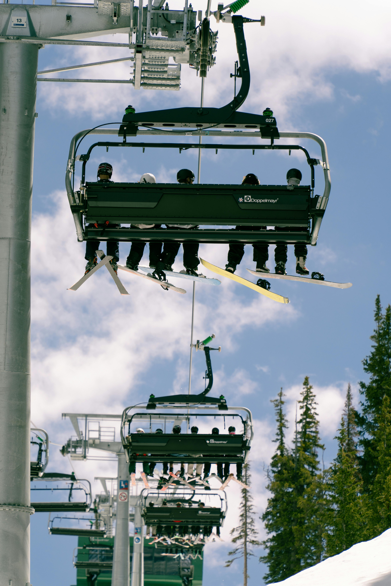
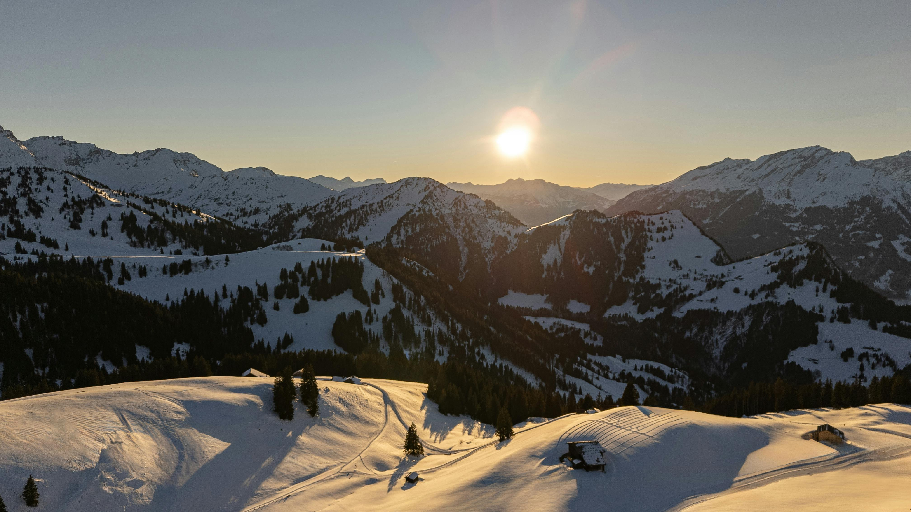

Share your ski day stats, relive your runs, and see how you stack up with others on the mountain. Whether you’re logging vertical feet, top speed, or total runs, this website helps you capture every moment of your season. Start tracking today and turn your ski days into your personal leaderboard.
 Big Sky really lives up to its name, everything about it feels huge. The mountains stretch out forever, the runs seem to go on for miles, and even when you’re surrounded by other skiers, it still feels like you’ve got the whole place to yourself. Lone Peak towers above it all, and once you ride the tram to the top, it’s like standing on the edge of the world. The air’s crisp, the snow sparkles in the sun, and there’s this quiet that settles over the slopes when you’re carving down a wide-open run. What makes Big Sky special isn’t just its size, though, it’s the vibe. People are friendly, the lift lines are short, and the whole place feels relaxed, almost peaceful. You can spend a morning cruising perfectly groomed blues, then drop into a bowl and get lost in powder the next. At the end of the day, you grab a drink, look out over the valley, and it’s hard not to think, yeah, this is what skiing’s supposed to feel like.
Alta’s a different kind of magic. It’s not about fancy lodges or après scenes, it’s about the snow, pure and simple. When those storms roll in from the Great Salt Lake, the powder piles up fast, light as air. Locals call it “the Greatest Snow on Earth,” and once you’ve skied it, you’ll probably agree. Every turn feels effortless, every face shot makes you laugh out loud, and by the time you’re at the bottom, you’re already thinking about heading back up. There’s a kind of old-school charm here. No snowboards, no crowds blasting music, just skiers doing what they love. You’ll see families who’ve been coming for generations, locals who can tell you the best tree lines, and a whole lot of people who just genuinely love this mountain. Alta doesn’t try to impress you — it doesn’t have to. The snow, the terrain, and the feeling of dropping into a powder field on a bluebird morning pretty much speak for themselves.